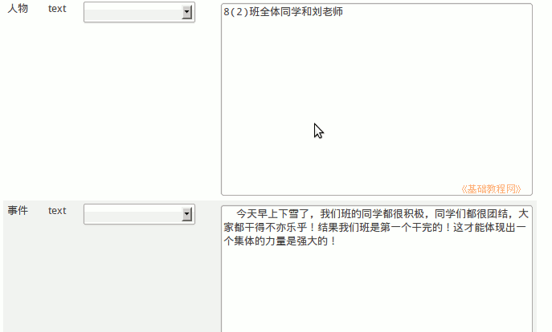
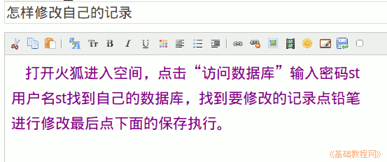

2011-2012 第一学期八年级电子表格教学课程设计
作者：TeliuTe 来源：基础教程网
二十六、实际应用 返回目录 下一课
学习目标：学会修改自己的记录；
注意事项：日志写操作步骤，绕过弯来；
1、实际操作
1）按照上一节的方法，添加一条今天发生事情的记录；

2）进入数据表点铅笔“编辑”修改记录；
3）日志写一篇怎样查看他人的记录；

板书设计：第26课 学会实际应用
1.添加一条今天发生事情记录(50)
2.日志：怎样修改自己的记录？
3.日志设置隐私－密码
课后记：
在楼道里吵嚷嚷的，出去看一下，上两次让自己进
简单看一下，把队伍整一下，没什么可说的，进来吧
--
还没敲铃自己先练习等着吧，时间过的真慢
进来个个兴奋的说个不停，等两分钟才静下来
--
敲铃了就开始讲课，黑板不用讲了，直接对着电脑讲
顺序是按照黑板上的笔记
--
奇怪，服务器自己重启动了？开机了出现一次
是不是开着窗户吹冷风，不知明年能否换新机子
--
修改记录点上面的执行也可以，还以为是新插入
要求点下面保存那儿的执行，效果是一样的
--
三个任务，数据库、日志和指法，建好标签一组一组的
最后一组等的着急，中间两组费时间多些
--
后面有较多的时间自己练习，这个班喜欢聊Q，
有三个得满分的指法，其他的速度也有提高
--
盲打还差点，可能是其他技巧掌握的不错
按词语打，容易错的不好打的多费些时间
--
有个数据表找不着了，让自己重建一个也没什么太难，
或者只是自己想着太难，日期类型用 datetime 后面的整理用 utf8
本节学习了修改记录的基础知识，如果你成功地完成了练习，请继续学习；
返回目录 下一课
本教程由86团学校TeliuTe制作|著作权所有
基础教程网：http://teliute.org/
美丽的校园……
转载和引用本站内容，请保留版权信息和本站链接。